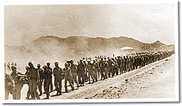

|
j
a v a s c r i p t |
April 21, 1942
More Japanese propaganda from the Tribune: "Along the Bataan road many white crosses mark the graves of American war dead while Filipino bodies lie unburied in the jungles." Sounds like the Japanese killed the Americans on the march, and Filipino civilians buried them.

Bataan Death March
A Spaniard riding a carromata saw the cochero heading for Mendiola. "Listen, I'll pay you double," he said, "but go around Mendiola, not through it. I don't want to get slapped again." Swiss friend, Ernest Klingler, did not bow to a Japanese sentry as the sign directed. The sentry, seated grandly like a potentate, called him back gruffly, and with the usual grunts, pointed to the sign. Klingler would have none of it and started to go on his way again. A Japanese officer observed the exchange and reproached Klingler. "Even if you are not a Filipino you should salute the sentry." "What sentry?" asked Klingler. "This soldier," said the officer. "That soldier...a sentry?" mocked Klingler. "I was trained in the Swiss Army and taught a sentry had to stand up and present arms in order to receive recognition. And that soldier was half asleep." So saying, he departed in triumph. A mestiza wasn't so lucky when she passed a sentry without bowing. He called her back, made her bow, slapped her, then sent her back around to try again. This time she bowed properly and was let go, after another slap for spite. |
|
|
|
|